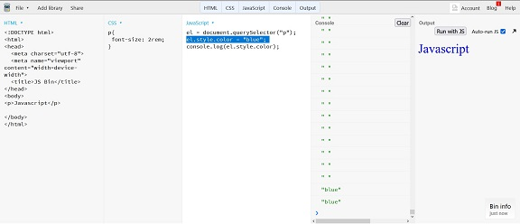

Como Ejecutar un Código Javascript
Existen varias formas de ejecutar código JavaScript en un PC, dependiendo de las necesidades y del entorno en el que se prefiera trabajar. Algunas opciones podrían ser:
Consola del Navegador
La forma más rápida y sencilla de ejecutar JavaScript es a través de la consola del navegador. Todos los navegadores modernos tienen una consola de desarrollador donde se puede escribir y ejecutar código JavaScript.
Como se Utiliza
A la pestaña de consola se puede llegar con una combinación de teclas, que son diferentes dependiendo del navegador utilizado, a saber:
- Mozilla Firefox: Presionando Ctrl + Shift + K (Windows) o Cmd + Option + K (Mac).
- Google Chrome: con Ctrl + Shift + J (Windows) o Cmd + Option + J (Mac).
- Microsoft Edge: F12 y luego selecciona la pestaña "Console".
- Apple Safari: Habilitar en el menú de desarrollador en las preferencias avanzadas, luego presionar Cmd + Option + C.
En la imagen siguiente se presenta la consola del navegador
Mozilla Firefox con un ejemplo sencillo. Se asignan dos
valores a dos variables, luego se realiza la suma en una
tercera variable, y se utiliza el comando más común para
depuración, console.log(), para mostrar el
resultado de la suma.

Ventajas
-
Acceso Rápido y Fácil:
- No se necesita instalar software adicional, ya que todos los navegadores modernos incluyen una consola de desarrollador.
- Se puede abrir la consola rápidamente con atajos de teclado (Ctrl + Shift + k en Firefox, por ejemplo).
-
Depuración en Tiempo Real:
- La consola permite inspeccionar y modificar el estado actual de la página web, facilitando la depuración.
- Se puede interactuar directamente con el DOM y ver los resultados de inmediato.
-
Ejecución Inmediata:
- Permite ejecutar fragmentos de código JavaScript rápidamente sin necesidad de configurar un entorno de desarrollo.
- Útil para probar pequeñas piezas de código o ideas rápidamente.
-
Herramientas de Desarrollo
- La consola está integrada con otras herramientas de desarrollo como el inspector de elementos, la red, el rendimiento, y más.
- Se puede usar funcionalidades avanzadas como perfiles de rendimiento y depuración paso a paso.
-
Visualización y Manipulación de Datos:
- Se puede imprimir variables, objetos y otros datos de manera legible.
- Facilita la manipulación de datos y la realización de pruebas en tiempo real.
Desventajas
-
Limitaciones en el Alcance del Código:
- El código ejecutado en la consola es volátil y no se guarda. Si se recarga la página, se perderá todos los cambios realizados.
- No es adecuado para desarrollar aplicaciones completas o mantener un código organizado.
-
Entorno de Ejecución Limitado:
- No se puede simular todos los entornos y condiciones que podrías necesitar para una aplicación completa, como servidores, bases de datos, o configuraciones complejas.
- No es ideal para trabajar con módulos, paquetes npm, o características avanzadas de JavaScript/Node.js.
-
Errores y Problemas de Seguridad:
- Ejecutar código en la consola del navegador puede ser inseguro, especialmente si se copia y se pega código de fuentes no verificadas, ya que puede ejecutar scripts maliciosos.
- La consola del navegador tiene acceso limitado a archivos del sistema y otros recursos, restringiendo ciertas operaciones.
-
Falta de Herramientas de Desarrollo Complejas:
- Se carece de características avanzadas que proporcionan IDEs modernos, como IntelliSense, autocompletado avanzado, y refactorización de código.
- La colaboración en equipo y el control de versiones son más difíciles de manejar sin un entorno de desarrollo completo.
-
No Adecuado para Proyectos a Gran Escala:
- Para proyectos grandes y aplicaciones complejas, la consola no proporciona la estructura ni las herramientas necesarias para mantener y escalar el código.
- Falta de integración con sistemas de construcción, prueba y despliegue automatizado.
Archivos HTML
Se puede escribir el código JavaScript dentro de un archivo
HTML, para esta labor se usa las etiquetas
<script> y
</script>.
Como se Utiliza
A continuación se muestra un ejemplo de uso de código Javascript en un archivo HTML:
<!DOCTYPE html>
<html lang="es">
<head>
<meta charset="UTF-8">
<meta name="viewport" content="width=device-width, initial-scale=1.0">
<title>Ejecutar JavaScript</title>
</head>
<body>
<h1>Hola Mundo</h1>
<script>
console.log('Este es un código JavaScript ejecutado desde HTML');
</script>
</body>
</html>
En este ejemplo se imprime en la consola la frase "Este es un código JavaScript ejecutado desde HTML".
Ventajas
-
Fácil de empezar:
- Simplicidad: Crear y ejecutar un archivo HTML con JavaScript es muy sencillo. Solo necesitas un editor de texto y un navegador.
- Sin necesidad de configuración: No requiere configuración adicional como instalación de software o entorno de desarrollo
-
Visualización directa:
- Interactividad: Permite ver inmediatamente los cambios en la interfaz de usuario y cómo el JavaScript interactúa con el HTML y CSS.
- Desarrollo web: Desarrollo web: Ideal para aprender y practicar desarrollo web, ya que HTML, CSS y JavaScript son la base de las páginas web.
- Depuración: Los navegadores modernos incluyen herramientas de desarrollo (DevTools) que facilitan la depuración del código JavaScript directamente en el navegador
- Compatibilidad: El uso de HTML y JavaScript se basa sobre estándares web bien definidos, asegurando compatibilidad en múltiples navegadores y plataformas.
- Portabilidad: Se puede distribuir un archivo HTML con JavaScript fácilmente, ya que cualquier navegador puede ejecutarlo sin necesidad de configuraciones adicionales.
Desventajas
-
Limitaciones de entorno:
- Restricciones del navegador: JavaScript en un archivo HTML está sujeto a las restricciones de seguridad del navegador, como la política de mismo origen, que puede limitar la capacidad de realizar ciertas operaciones.
- Capacidades limitadas: No se pueden ejecutar operaciones del sistema directamente desde un navegador, lo cual es posible con entornos de ejecución como Node.js.
-
Rendimiento:
- Cargando en el navegador: La ejecución del código depende del rendimiento del navegador, lo que puede ser menos eficiente que entornos especializados para el desarrollo de JavaScript.
- Recursos del cliente: El rendimiento del código puede variar según las capacidades del dispositivo del usuario
-
Escalabilidad y organización:
- Mantenimiento: A medida que el proyecto crece, mantener el código JavaScript en archivos HTML puede volverse desorganizado. Es mejor separar el JavaScript en archivos externos.
- Buenas prácticas: No fomenta automáticamente el uso de prácticas modernas de desarrollo como la modularización y la separación de responsabilidades.
- Sin herramientas avanzadas: A diferencia de los entornos de desarrollo integrados (IDE), trabajar con archivos HTML no proporciona herramientas avanzadas como la autocompletación, análisis de código estático o integración continua.
- Seguridad: El código JavaScript en archivos HTML es fácilmente accesible y visible para cualquier usuario que pueda ver el código fuente de la página, lo que puede exponer lógica de negocio sensible.
Node.js
Node.js es un entorno de ejecución para JavaScript en el lado del servidor. Se puede ejecutar JavaScript directamente desde la línea de comandos.
Como se Utiliza
Para poder utilizar esta forma de ejecución del código, se hace necesario tener instalado nodejs:
-
Creación del archivo fuente js: Crear el archivo con
extensión
.js, por ejemploapp.js:console.log('Hola desde Node.js'); -
Ejecutar el archivo fuente js: Abrir la terminal o el
símbolo del sistema, navegar hasta el directorio donde está
guardado el archivo
app.jsy ejecutar:node app.js
Ventajas
-
Alta Performance y Escalabilidad:
- Event-Driven, Non-Blocking I/O: Node.js utiliza un modelo de entrada/salida no bloqueante y basado en eventos, lo que permite manejar múltiples conexiones simultáneamente de manera eficiente.
- V8 Engine: Está construido sobre el motor V8 de Google, que compila JavaScript a código máquina nativo, proporcionando un rendimiento muy rápido.
-
JavaScript en el Lado del Servidor:
- Un Lenguaje en Ambos Lados: Permite a los desarrolladores usar el mismo lenguaje tanto en el cliente como en el servidor, simplificando el desarrollo y la transferencia de conocimientos.
- JSON Nativo: La integración nativa con JSON facilita el intercambio de datos entre el cliente y el servidor.
- Gran Ecosistema de Paquetes: NPM es uno de los mayores ecosistemas de bibliotecas y herramientas de código abierto en el mundo, permitiendo a los desarrolladores encontrar soluciones para casi cualquier problema.
-
Desarrollo Rápido y Prototipado:
- Frameworks y Herramientas: La existencia de frameworks como Express.js facilita la creación rápida de aplicaciones web robustas y escalables.
- Community Support: Una gran comunidad activa que contribuye con módulos, herramientas y soporte.
-
Microservicios y Aplicaciones en Tiempo Real:
- Socket.IO: Permite la creación de aplicaciones en tiempo real como chats y juegos en línea con facilidad.
- Microservices Architecture: Facilita la creación de arquitecturas de microservicios, mejorando la escalabilidad y mantenimiento del código.
Desventajas
-
Modelo de un Solo Hilo:
- Bloqueo del Event Loop: Si una operación es intensiva en CPU, puede bloquear el event loop y hacer que la aplicación sea menos adaptable al viewport.
- Concurrency Limitations: No es adecuado para tareas que requieren alta concurrencia y uso intensivo de CPU sin considerar técnicas de procesamiento en segundo plano o usar workers.
-
Madurez del Ecosistema:
- Módulos Inmaduros: Aunque npm tiene una gran cantidad de paquetes, algunos pueden ser inmaduros o de baja calidad.
- Cambios Rápidos: El ecosistema evoluciona rápidamente, lo que puede provocar problemas de compatibilidad y requerir actualizaciones frecuentes.
-
Callback Hell y Manejo de Errores:
- Callback Hell: El uso extensivo de callbacks puede llevar a un código difícil de mantener y leer. Aunque las promesas y async/await han mitigado este problema, sigue siendo un desafío en algunos casos.
- Manejo de Errores: El manejo de errores asíncronos puede ser complejo y requiere una comprensión clara de las promesas y async/await.
- Compilación de Módulos Nativos: Algunos módulos npm dependen de código nativo que debe ser compilado, lo que puede causar problemas de compatibilidad entre diferentes sistemas operativos.
- Rendimiento Comparativo: Para tareas que requieren mucho procesamiento en la CPU, Node.js puede no ser la mejor opción en comparación con lenguajes como Go o Java.
Entornos de Desarrollo Integrados (IDE)
Un IDE como Visual Studio Code, WebStorm, o Sublime Text ofrecen características avanzadas para escribir y ejecutar código JavaScript.
- Visual Studio Code: Tiene una terminal integrada donde se puede ejecutar Node.js directamente. Además, se puede usar extensiones como "Live Server" para ejecutar y ver cambios en archivos HTML/JS en tiempo real o el complemento "Code Runner" para ejecutar el código JavaScript.
- WebStorm: Ofrece herramientas integradas para desarrollo JavaScript, incluyendo un terminal y soporte para Node.js.
Playgrounds en Línea
Existen plataformas en línea donde se puede escribir y ejecutar JavaScript sin necesidad de instalar nada en tu PC.
Algunas populares incluyen:
- CodePen: Ideal para prototipos rápidos de HTML, CSS y JavaScript.
- JSFiddle: Similar a CodePen, permite probar código JavaScript junto con HTML y CSS.
- Repl.it: Permite ejecutar código en múltiples lenguajes, incluyendo JavaScript.
-
JSBin: También se
utiliza para prototipos rápidos de HTML, CSS y
JavaScript. En este ejemplo se tiene un código en la columna
HTML.
En este caso, se presenta un fragmento de código en la sección HTML, que exhibe un párrafo<p>Javascript</p>. En la sección CSS, se ajusta el tamaño del texto, mientras que en la sección JavaScript se define el cambio de color del texto. La sección console opera de manera similar a la consola de Git, y la sección output muestra cómo se visualizaría la página en un navegador. 